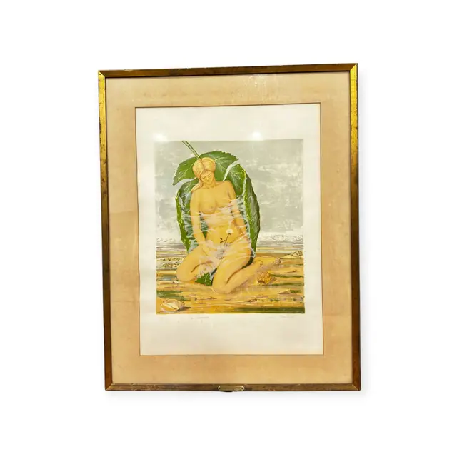
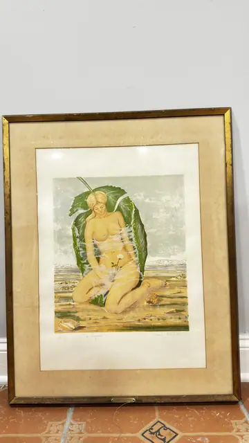
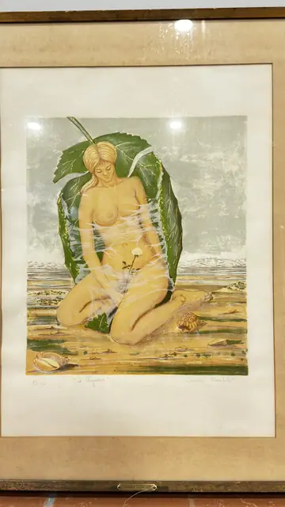
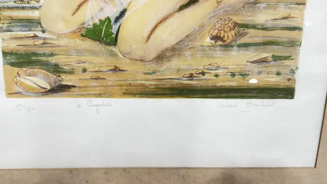

Paintings & Prints
Gerard Bachelet La Chrysalide Lithograph Nude, Numbered Edition, Framed
Gerard Bachelet · third quarter 20th century
Price Upon Request




About the Item
Gerard Bachelet. A pale, softly modelled nude kneels folded into an enormous green leaf that wraps around her like a cocoon, her blonde hair swept up and a filmy white veil drifting across her body. Around her lie cowrie shells, small stones and a banded snail on bands of sand-yellow and green, with a hazy pale seascape above. The colour is delicate and chalky - leaf green, flesh, sand, faint blue - printed on heavy white paper with a wide margin, titled and numbered in pencil below. Medium: colour lithograph on wove paper. Signed pencil, lower right of the margin, reading "Gerard Bachelet". Edition: 19/50. Inscribed on the reverse or mount: 19/50; "La Chrysalide"; Gerard Bachelet. Condition: The mat is noticeably browned and water-stained, especially along the top and left, and the backing paper is toned; the print itself looks clean. Frame rubbed at the corners.
Details
- Creator:
- Gerard Bachelet
- Creation Year:
- third quarter 20th century
- Dimensions:
- Height: 32.0 in (81.28 cm)
Width: 24.75 in (62.87 cm)
outside of frame - Medium:
- colour lithograph on wove paper
- Edition:
- 19/50
- Period:
- 20Th
- Condition:
- Offered in the condition shown in the photographs.
- Reference Number:
- VO-247
- Documentation:
- no certificate photographed
- Gallery Location:
- 19/50; "La Chrysalide"; Gerard Bachelet